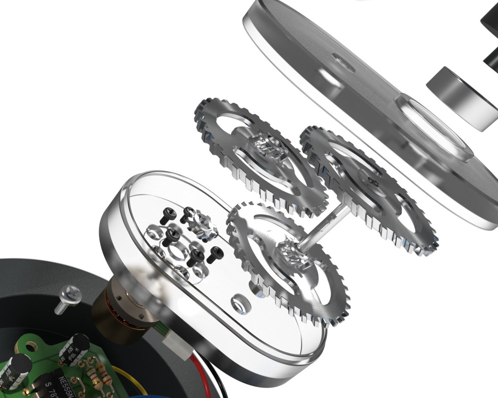
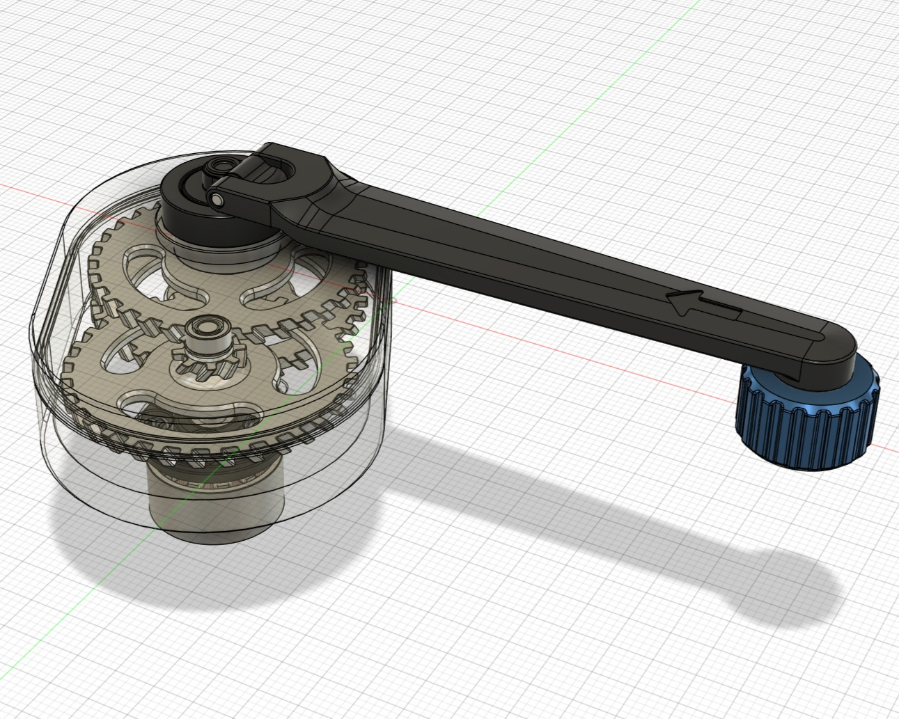
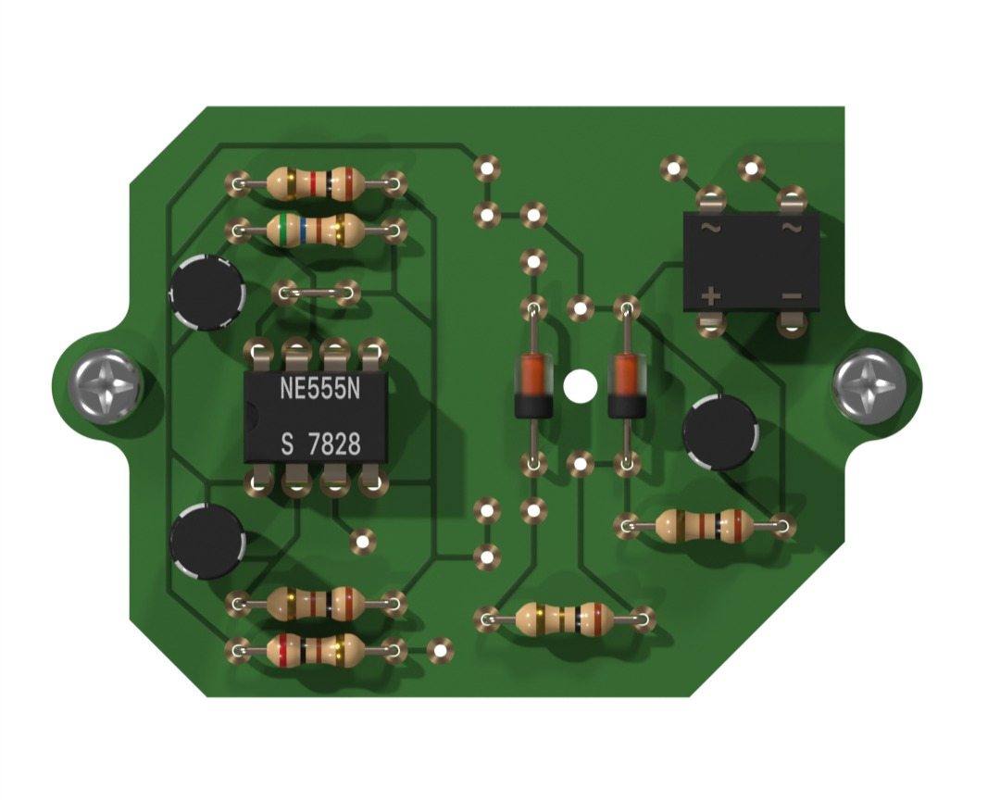
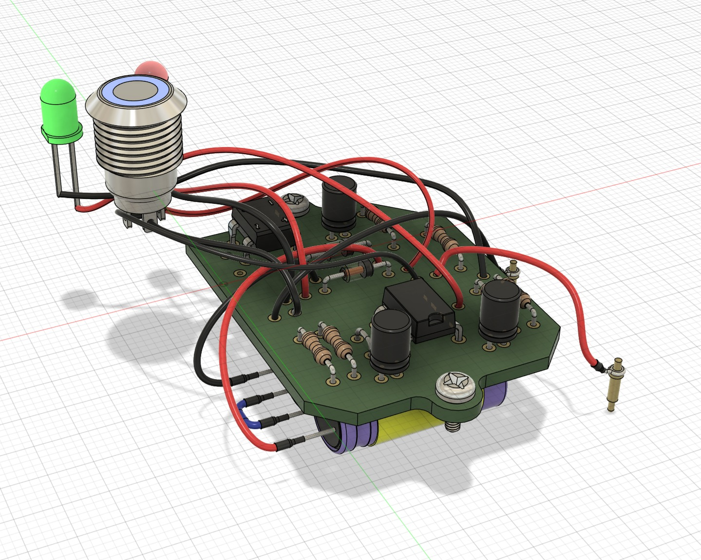
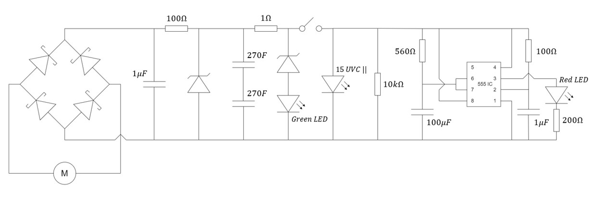
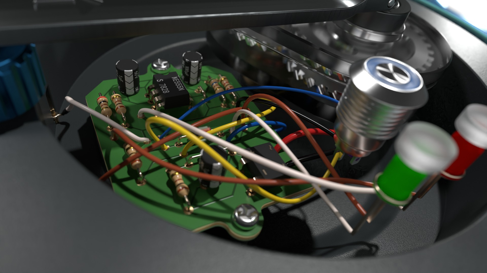
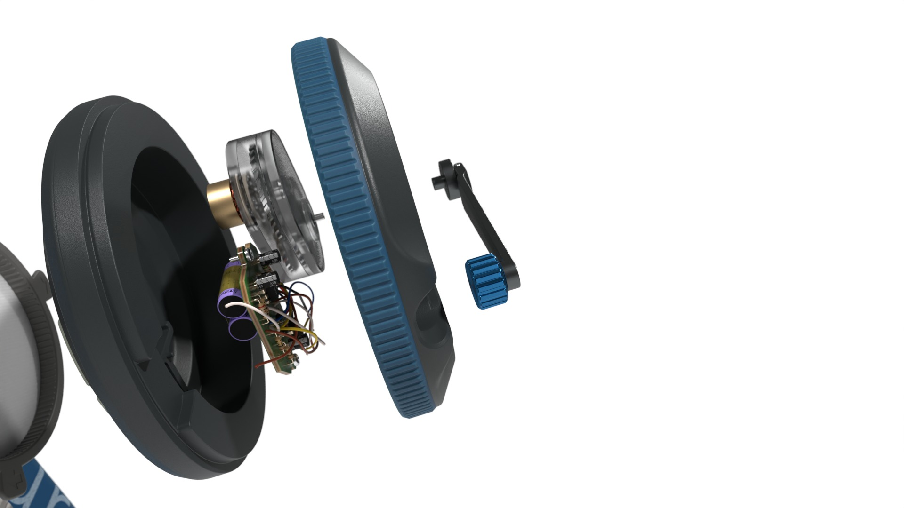
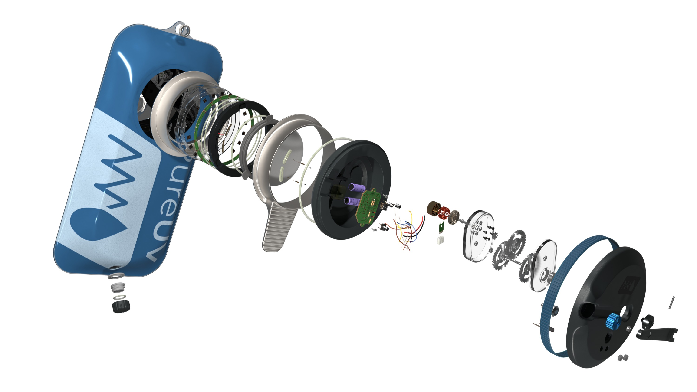
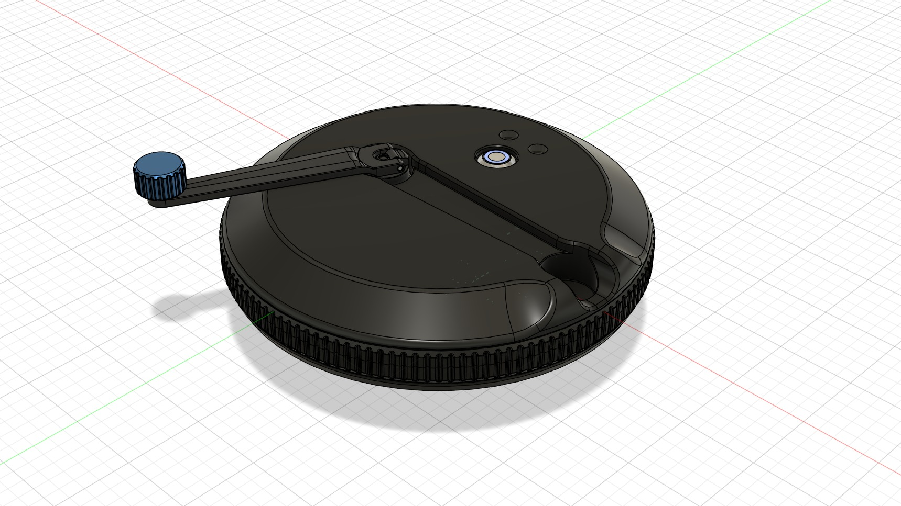

Problem Statement
Hikers require a reliable method of water purification without batteries or external power during emergency situations. The challenge was to design a compact, hand-cranked system capable of generating and storing enough energy to power a UV sterilisation module, while fitting within a portable device.
My Role & Responsibilities
I designed and validated the internal power generation system, including mechanical transmission, electrical energy conversion, and energy storage. This involved calculating gear ratios, modelling torque and efficiency losses, designing circuitry to convert rotation into rectified electrical power, selecting suitable energy storage methods to deliver sufficient UV radiation over time, and integrating these modules in CAD.
Design Iterations
Explored multiple form factors, ultimately settling on a compact, ergonomic camelback design.


Mechanical Subsystem
I designed a compact hand-crank system with an 80 mm crank arm, optimized for user comfort and mechanical efficiency. A 3-stage helical gear drivetrain multiplies the crank speed to power the generator, achieving smooth, quiet operation while fitting neatly within the device. Efficient use of axle splines and transmission gears minimized gearbox size and friction, ensuring the user can comfortably generate the required power with a manageable force.


Electrical Subsystem
The control circuit converts rotational energy from the hand crank into electrical energy by backdriving a DC motor. This energy is rectified, stabilised, and stored in supercapacitors. A green LED signals when the capacitors are fully charged, indicating the system is ready. Pressing the activation button immediately powers the UV-C module to sterilise water on demand. A 555 timer IC controls an extended red LED pulse, giving visual feedback for the sterilisation duration.



UV Module Integration
Integrated the mechanical and electrical subsystems into a compact housing embedded within the camelback refill lid. The final packaged solution balanced spatial efficiency, waterproof sealing, structural support, and user ergonomics while maintaining manufacturability and ease of assembly.




Results & Key Learnings
- Delivered a fully integrated and practical, human-powered UV sterilisation system combining mechanical and electrical transmission, within a compact camelback-compatible housing.
- Awarded 95% High Distinction for the project.
- Selected as an examplar project for future iterations of the UNSW DESN2000 course.
This project strengthened my ability to integrate mechanical and electrical subsystems into a cohesive product. I developed a complete analog control circuit without using a microcontroller, reinforcing first-principles electrical design. I was able to expand my CAD knowledge through implementing accurate wiring via 3D spline use in Fusion360. Finally, this project deepened my understanding of the importance of designing within housing constraints and ensuring that theoretical calculations are balanced with real-world implementation limits.